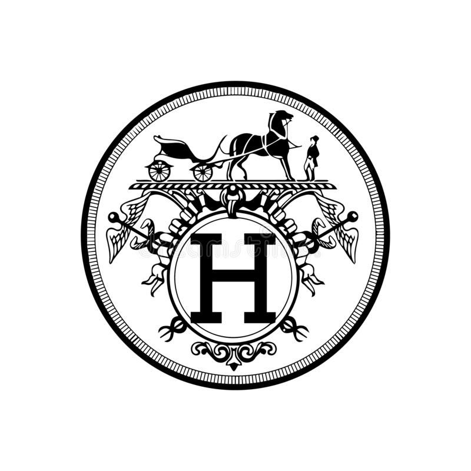
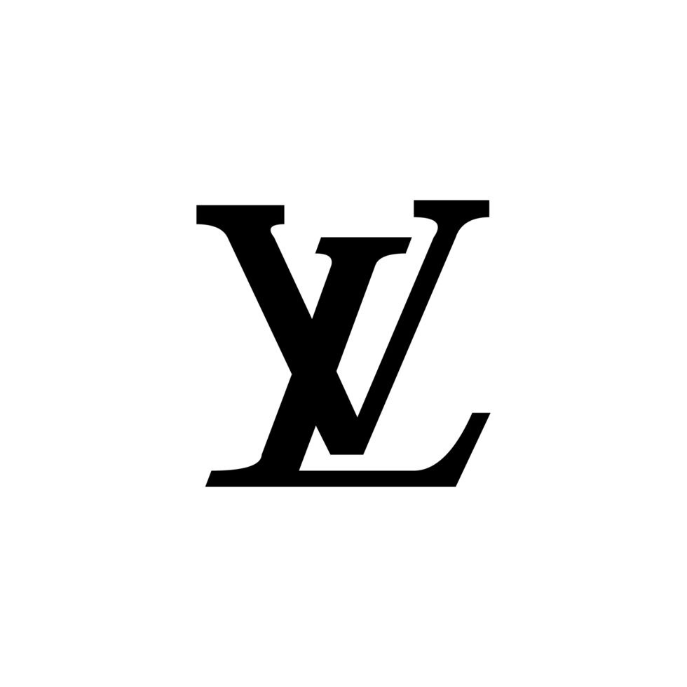
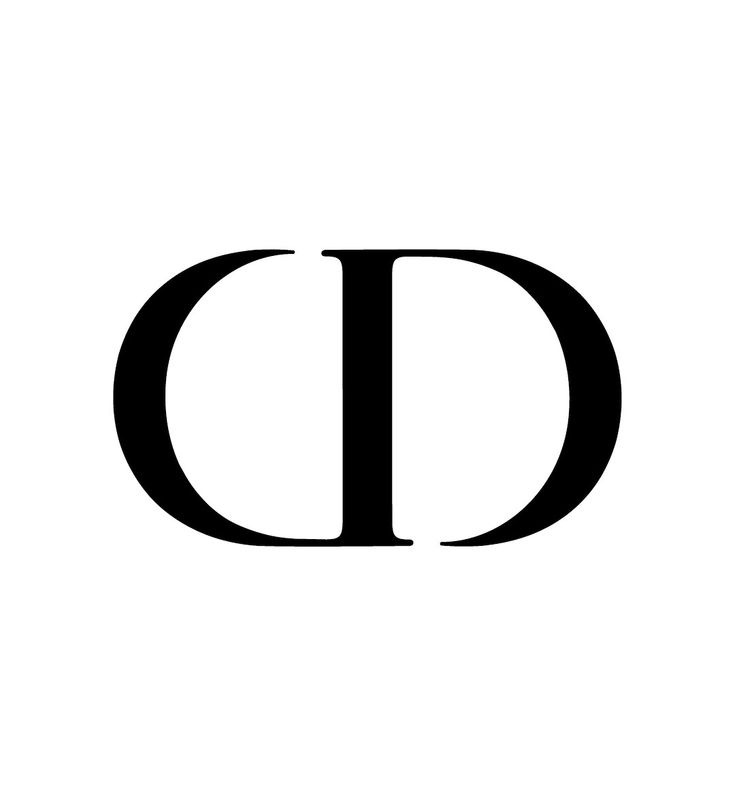

Historic Luxury Brands

Hermès
Founded in 1837 in Paris, Hermès began as a harness workshop serving European noble families.

Louis Vuitton
Founded in 1854, Louis Vuitton gained fame through luxury travel trunks and innovative luggage designs.

Chanel
Founded in 1910, Chanel transformed women's fashion through elegance, simplicity and modern design.

Dior
Founded in 1946, Dior introduced the famous New Look collection which changed post-war fashion.